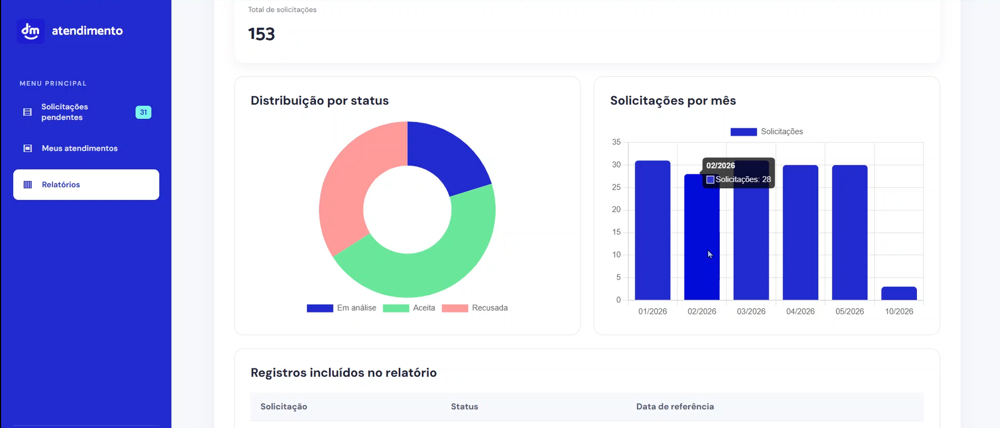

API 2026.1
HEALTHY BOT
ChatBot integrado ao Telegram que auxilia o usuário com informações confiáveis sobre saúde.
Projeto realizado em grupo durante 3 sprints, do qual pude atuar como desenvolvedor.
- - Realizei conexões entre o código e o Telegram, para intreração com o usuário;
- - Fiz pesquisas para melhorar sistemas e buscar alternativas em códigos e lógicas;
- - Realizei testes para encontrar e corrigir erros no Bot;
Tecnologias: Python, Telegram, Scraping de dados, Git/GitHub, Jira.
